Ctfplotter plots noise-subtracted, rotationally averaged power spectra from tilt series data and allows one to determine the position of the zeros of the microscope CTF. The power spectra are obtained by extracting small squares of image (referred to as tiles) that overlap by 50%, taking their 2D Fourier transforms, rotationally averaging the transforms to obtain one-dimensional curves, dividing by the corresponding curves obtained from images consisting only of noise, and summing these 1D curves. Once defocus is determined from such power spectra, the phase inversions of the CTF can be corrected with the program Ctfphaseflip. Defocus can be found in angular subranges of the tilt series. The defocus values are stored in a table so that they can be visualized, deleted, or recomputed if necessary. All of the values in the table are saved to the defocus file, which is provided as input to Ctfphaseflip.
| Angles | Open the tilt angle range and tile selection dialog. |
| Fitting | Open the Fitting Parameters dialog. |
| Zoom in again after zooming back out. | |
| Zoom out after zooming in. | |
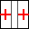 | Adding Non-center Tiles button. If this button is enabled, the current estimation is based only on center tiles; push this button to add non-center tiles to the current estimation. |
| Print the plotted curves. | |
| Bring up Qt assistant to display this page. |
This dialog allows three different kinds of fitting, which can be selected by the radio buttons at the top. The second and third methods are much less useful than the fit to a CTF-like curve, although they may still have some value for data with very weak CTF signals. They are described at the end of this section, which only covers the portion of this dialog used for basic fitting. Additional features in this dialog are described in the sections below on finding astigmatism and finding phase shift.
After changing parameters in text boxes in this dialog, either press Apply or type the "Enter" key to have the fit recomputed with the current parameters.
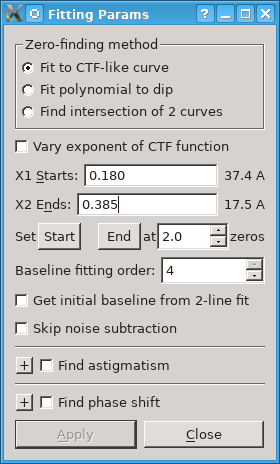
Fitting to a CTF-like curve involves finding four to seven parameters, depending on the extent of the fit and whether the option Vary exponent of CTF function is selected. Varying the exponent can allow the curve to fit better to the width of the dip around the first zero, but since it adds a parameter, it can destabilize the fitting and produce bad results in some cases. One of the parameters of the curve is the defocus. The other parameters for a basic fit are an additive factor, a scaling factor, and the decay rate for an exponential that attenuates the curve. However, when there is detectable signal between the second and third zeros and the fitting region is extended to at least halfway between those zeros, the program automatically adds two more parameters, a scaling factor and decay rate for a second exponential. The benefit of this is illustrated in one of the examples below.
The range of the curve is set from the entries X1 Starts and X2 Ends. When the program first starts, it sets these values to be about 0.05/pixel before the first zero, and close to the second zero, respectively, based on the expected defocus. If necessary, you should adjust the starting value so that it is to the right of where the fitted curve strongly deviates from the actual. In general, you should adjust the ending value to go as far out as CTF oscillations can be reliably discerned, making it bigger to fit past the second zero. On the other hand, if the magenta curve becomes noisy and falls off before a second zero, you should reduce the ending point of the fit to exclude that region. See the BPV example below.
The next line of controls provides another way to adjust fitting range. The Start button will reset the X1 Starts entry based on the current defocus, which is useful when the actual defocus is not close to the original expected defocus. The End button will set the X2 Ends entry based on the current defocus at the zero number indicated in the spin box, which can have fractional values.
The fit does rely on an initial approximate value for the defocus and may fail if the actual defocus is far from that value. It takes this value either from the expected defocus or from the current defocus estimate, depending on whether the option is selected to use the current defocus estimate in the Tilt Angle and Tile Selection Dialog. If the defocus revealed by the power spectrum is far from the expected defocus, you should either change the value of the expected defocus, or select the option to use the current defocus estimate and make sure that estimate is approximately correct.
The Baseline fitting order spin box controls the fitting of a constrained polynomial to the apparent baseline of the power spectrum at frequencies past the first zero. This polynomial is then subtracted to make the baseline be flat. After improvements to this fitting in IMOD 4.10, this fitting has been turned on by default with an order of 4, except when the expected position of the first zero is at or beyond half Nyquist, in which case the default order is 1. An order of 0 turns off this fitting. The order can also be adjusted with hot keys 0, 1, 2, 3, and 4 in the plotter window. If the deviation from baseline is very small in your data, you can try turning off this fitting to see if it improves the signal.
The option to Get initial baseline from 2-line fit can be helpful in cases where the noise subtraction leaves a spectrum that slopes badly even around the first zero and makes it difficult to detect the first zero and include it in the polynomial baseline. The program fits two lines to the power spectrum, one from near the start of the spectrum to a point in the middle, and a second line from the same middle point to the end of the spectrum. It tries this fit over a range of middle points around the expected position of the first zero and finds the point where there is the biggest difference between the slopes of the low and high-frequency lines. This method is always used for an initial baseline subtraction when there are no noise images, or when the option described next is selected; in these cases this option is disabled.
The option Skip noise subtraction allows you to turn off the use of the noise images and rely on the two-line initial fit instead. You can use this both to find out whether it solves some problems in fitting and to assess whether you can dispense with noise files in the future.
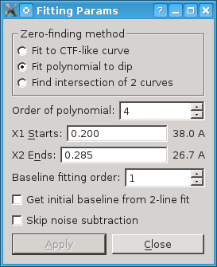
You can also fit a polynomial to the region around the first zero. The The Order of polynomial spin button allows you to select an order between 2 and 6, which involves finding 3 to 7 parameters. The goal here is to get a smooth curve through the dip; the minimum of the curve is taken as the location of the first zero.
As for CTF-like fitting, the range of the curve is set from the entries X1 Starts and X2 Ends. Since you are just trying to localize the dip at the first zero, you should restrict the range as necessary to get a good fit there.
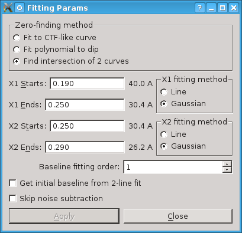
Finding the zero at the intersection of two curves involves fitting two separate curves, before and after the first zero. Each can be fit to either a straight line or a Gaussian over the selected range. The program finds the intersection of the two curves, if possible, and assigns that as the first zero.
X1 sets the fitting range for the curve before the first zero, drawn in green. Use the X1 fitting method radio button to select whether to fit to a straight line or to a Gaussian.
X2 sets the fitting range for the curve after the first zero, drawn in blue. Use the X2 fitting method radio button to fit to a straight line or to a Gaussian.
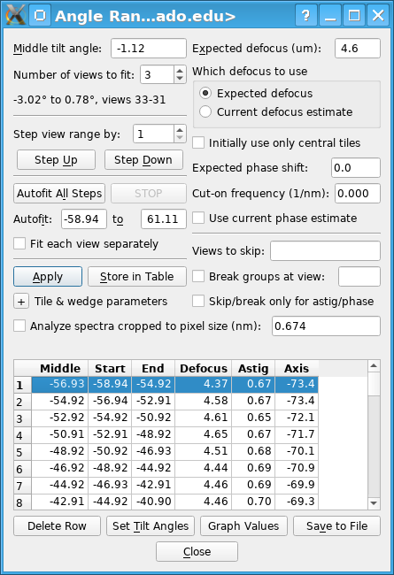
Middle tilt angle
Number of views to fit:
The program will include in the power spectrum the number of views specified
in the spin box, with the middle view of that set having the tilt angle
specified the middle angle box. It will adjust the middle angle entry as
necessary to match an existing tilt angle and to be a feasible middle angle
for the selected number of views. The range of tilt angles and view numbers
in the spectrum are summarized in the line below the spin box. Views are
numbered from 1.
Step view range:
Pressing Step Up or Step Down will shift the selected views by
the amount in the Step view range by text box.
If this step would make the starting or ending view
go outside the bounds of the
tilt series, the actual step is reduced.
The power spectrum is computed and fit to at the new
angular range. The step size is initialized to be half the original number of views.
Autofitting:
Once fitting parameters have been set optimally and an appropriate number of
views to fit has been chosen, the Autofit All Steps button can be used to step
automatically to a series of view ranges, find the defocus and optionally
other parameters, and store the defocus in the table.
Apply:
This button causes the spectrum and fitting to be done with the current paramaters.
Store in Table:
Push this button to store
the defocus and any other paratmeters found for
the selected views in the angles and defocus table. The defocus
indicated by "D" is stored unless a second zero has been clicked, in which
case the average defocus indicated by "D-avg" is stored. Astigmatism amount
and axis, phase shift, and cut-on frequency will be stored if their values as
a result of fitting show in the plotter window. The table will not show
phase or cut-on values if they are the same for all table entries (i.e., if
they were set from their respective fields for expected
values), although the defocus file will have these values.
Expected defocus:
This field starts out with the expected defocus value
specified in the parameter file, but you can change it. Initially, this value
is used to compute the expected frequency of the first zero of the power
spectrum and to set
the initial values of the X1 and X2 ranges which determine what segments of
the power spectrum are fitted.
When non-center tiles are being included, Ctfplotter uses a defocus to
compute shifts needed to align the power spectra of non-center
tiles with the CTF curve of center tiles. With the radio button group
Which defocus to use, you can specify
whether to use the expected defocus shown in the Expected defocus
(um) edit field or the defocus last found by the
program as the defocus for computing the shifts. In the latter case, the
autofitting behavior is also modified as described above.
Initially use only central tiles:
Choose whether to exclude the noncenter tiles from the estimation
when computing the power spectrum. This option should not be needed
with data from modern cameras.
With this checked,
only the center region defined by
Center defocus tol will be
included in the next computation, and the "Adding Non-center Tiles" button
will be enabled. You need to push that button to add the left region
defined by Left defocus tol and the right region
defined by Right defocus tol
to the estimation.
Otherwise,
all regions (center, left, right) will be included when the curve is
recomputed,
and the "Adding Non-center Tiles" button will be disabled.
Phase shift fields:
The Expected phase shift text box can contain a phase shift in
degrees. If phase shift is not being determined, this constant phase shift will be
included in all CTF computations. If it is being found, then the value here
sets the center of the phase shift search range.
The Cut-on frequency text box can contain a cut-on frequency that is
relevant when a non-zero phase shift is included in the CTF computations.
See the extensive explanation of this cut-on in the section on Finding
phase shift and cut-on frequency. If cut-on frequency is not being
determined, the constant value here is included in CTF computations. If it
is being found, this value provides a fallback that is used when searches fail
to find a best cut-on frequency.
When Use current phase estimate is checked, phase shift searches will
be centered on the value last found by fitting, and the autofitting behavior
will be modified as described above.
View skipping and breaking fields:
These entries control which views are included when spectra are analyzed.
The Views to skip field can be used to exclude views either from all
spectra, or only from the spectra used to find astigmatism or phase shift.
If Skip/break only for astig/phase is not selected, then the program
will behave as if these views simply do not exist. If it is selected, then
the views will be included in spectra used only for defocus measurements and
their defocus can be determined, but they will excluded from any spectra
used to compute phase or astigmnatism.
When Break groups at view is selected and the starting view number of a
bidirectional tilt series is entered in the text box, then groups of views
for computing spectra will be entirely on one side or the other of the
boundary between this view and the next. Again, the
Skip/break only for astig/phase option will determine
whether this restriction is applied for all spectra, or just for ones used
to determine astigmatism or phase shift. It makes sense never to group views
across this boundary, since the conditions affecting these parameters could
easily change during the time interval between the two halves of the tilt
series. On the other hand, defocus was probably set by autofocusing at each
view on either side of the boundary, which would have produced no
discontinuity in the values, so there seems to be no problem with combining
views across the boundary when just finding defocus. Note that a tilt
series taken with the dose symmetric ("Hagen") scheme of alternating plus
and minus tilt angles should not be treated as a bidirectonal tilt series
because there is no big discontinuity or long time interval on the two sides
of zero degrees.
The option Analyze spectra cropped to pixel size is covered in a separate section below.
Tile & wedge parameters:
The + pushbutton will open up a section of the dialog for parameters
that are rarely adjusted; they include:
Angles and Defocus Table:
This table shows the starting and ending tilt angle,
the middle of the angular range, and the defocus value for each range where
you have stored results. The lines are in order by the middle of the angular
range. When you store a value for an angular range matching that of an
existing line in the table, the existing defocus value is replaced with the
new one. When the program starts, this table is loaded with values from an
existing version of the output file. Below the table are three buttons that
operate on the table:
Push the Delete Row button to delete the entry for the currently selected row of the table. If you store results for an angular range and then want to replace them with results from a wider or narrower range, you would need to delete the row with the initial results.
Push the Set Tilt Angles button to reset the middle tilt angle and number of views to fit to the values implied by the currently selected row of the table and recompute the power spectrum. To conveniently step through a series of angular ranges, click the mouse anywhere on a row to select that row of the table. Then press the Set Tilt Angles button with the mouse, or using the keyboard accelerator Alt-T. Thereafter, you can type an up or down arrow key to move up or down in the table and press this button again, without moving the mouse. Alternatively, you can double click in the table to select a row and have its power spectrum displayed.
Push the Graph Values button to open separate windows with graphs of all the determined values in the table versus tilt angle. The graphs can be closed with the close buttons in their title bars. They need not be closed before opening another set of graphs.
Push the Save to File button to write the contents of the angles and defocus table to the output file.
When the pixel size is small (under ~0.3 nm), the spacing between higher-order zeros may become too small to represent the spectrum well. When this happens, Analyze spectra cropped to pixel size can be turned on to spread out the power spectrum by cropping off the high frequencies. This cropping can be helpful even when the higher frequencies do not initially appear to have usable signal. The text box for the new pixel size is initialized with the actual pixel size of the data set and is constrained to containing higher values. No cropping occurs unless you enter a higher pixel size.
The following sequence of spectra are from an image with quite strong high-resolution signal and illustrate this situation clearly. This tilt series image, obtained from Wim Hagen at EMBL, had a pixel size of 0.169 nm and a defocus of 1.4 microns. The first spectrum is with initial fitting set up without cropping, the second has intermediate cropping, and the third has the final cropping.
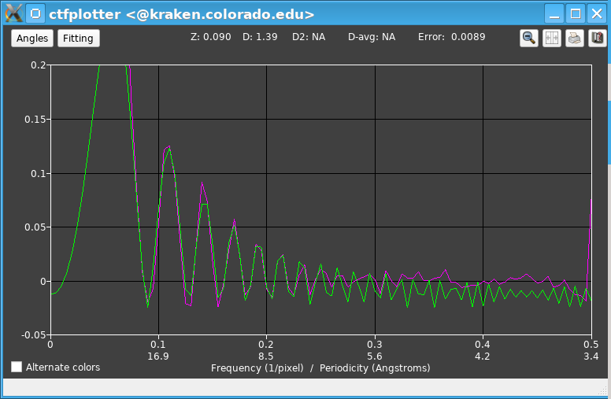
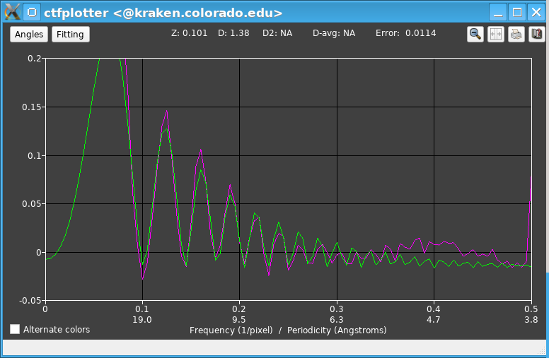
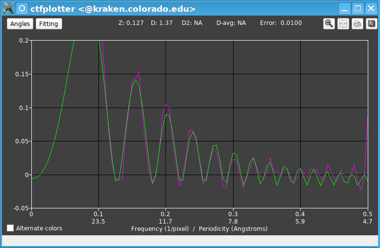
There are two possible signs that the spectra need to be cropped, aside from the small pixel size in itself. One is a fitted (green) curve that becomes quite jagged, with irregular and modulated amplitudes. In the first snapshot, the curve looks like it has only two points per zero at about 0.28/pixel, has irregular amplitudes at 0.34 and 0.37/pixel, and is damped down inappropriately between 0.42 and 0.47/pixel. These features are all a result of there being too few points to represent this curve properly, and the actual spectrum would share this problem. The second sign is an output line in the blank space below the cropping entry indicating what cropping would be needed to have a particular number of points between zeros. Specifically, in this case, with the fitting range set to 0.275/pixel, the message was "Crop to 0.187 nm to have >= 3.5 points/zero in fitting range", and it was shown in dark magenta because the needed pixel size was within 17% of the current one.
Before taking the second snapshot, the cropping option was turned on and the pixel size to crop to was set to 0.19 nm. When the cropping is enabled or changed, the meaning of the frequency units changes: notice that 0.5/pixel has gone from being 3.4/Angstrom to 3.8/Angstrom. Also, the fitting ranges in the Fitting Parameters dialog, which are in reciprocal pixels, are changed to maintain the same actual frequency in reciprocal nanometers; in this case the range changed to 0.31/pixel, but the resolutions in Angstroms next to the fitting range values stayed the same. Notice that the fitted curve has a regularly declining amplitude and the actual spectrum shows clearer oscillations as well. The fitting range was thus changed to 0.39/pixel. In response, the cropping suggestion changed to "Crop to 0.233 nm to have >= 3.5 points/zero in fitting range", this time in red because the suggested change was larger.
The cropping was changed to 0.235/nm for the third snapshot, which changed frequency 0.5/pixel to be at 4.7/Angstrom, and made the fitting range correspond to 0.49/pixel. It is now somewhat clearer that the spectrum has good signal out to that point.
Cropping can be important for a good fit to the high frequency data, but there is a bit of a Catch-22 here: you may need to try cropping in order to see that there is good signal in the range where the cropping matters. It is thus recommended that you routinely try cropping to ~0.2 - 0.25/pixel when the pixel size is smaller than that. However, spreading out the spectrum will result in less averaging in each frequency bin and thus a noisier spectrum, so at some point the cropping will become counter-productive. Use the minimum increase needed to make the spectrum easier to fit or visualize.
Ctfplotter can find astigmatism by making power spectra that are rotationally averaged over a wedge of 2-D Fourier space. It fits to a series of such spectra at the full range of wedge orientatons. For example, with the default parameters, it computes the spectrum from a 90 degree wedge, which is half of frequency space, with the center of the wedge oriented at -90, -85, -80, etc. up to 85 degrees. It is able to compute these overlapping wedge spectra very efficiently because frequency space is divided into small, non-overlapping sectors (5 degrees by default) and rotationally averaged spectra are stored separately for each sector.
Each wedge spectrum is fit to a CTF-like curve to its defocus. When there is astigmatism, this defocus will vary consistently between the low and high defocus axes of astigmatism. The difference between maximum and minimum measured defocus values will be less that the actual astigmatism because these broad wedges average over a range of angles and defocus values. A search is done to find the underlying astigmatism amount and axis angle that best fit the set of measured defocus values. If the program determines that astigmatism is large enough that it could blur out the higher zeros within the fitting range when summing over 90 degrees, it will iterate the process, this time accounting for the estimated astigmatism when summing the individual wedge spectra. If the estimate changes enough, it will iterate again.
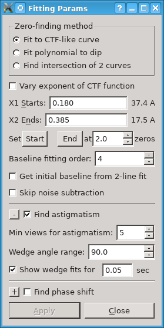
The wedge spectra will be computed over the maximum of the number of views being fit for defocus and the number specified with the Min views for astigmatism spin box. It is generally appropriate to compute the wedge spectra over more views than being used for defocus, for two reasons: 1) Each wedge spectrum is based on less data than the full spectra for measuring defocus (e.g., half as much for 90 degree wedges), so if a certain number of views need to be averaged to get reliable defocus estimates, more views (twice as many for 90 degree wedges) are needed to get wedge spectra with the same signal-to-noise ratio. 2) Even when there appears to be good enough signal to measure defocus and astigmatism on each view (as in the example below), the view-to-view variability in the estimated defocus will be reduced by averaging over multiple views. Since astigmatism would be expected to vary slowly through the tilt series, most variations from view to view are unlikely to be real and it is appropriate to reduce them.
When the program computes wedge spectra for finding astigmatism, it will display each spectrum and its fit as long as the Show wedge fits option is turned on. You should always have this on when you start finding astigmatism so that you can assess how reliable the astigmatism fits are. Watch out for jumps in the fitted curve; one or two can be tolerated because there is robust fitting that can discard them, but if there are more than that, average the wedge spectra over more views. The top line of output shows the fitted defocus and the second line will show "Wedge:" and the center angle of the wedge. If necessary, you can put a longer delay time in the text box after Show wedge fits for. Also watch for dramatic changes in the shape of the spectra, such as the dip at the first zero becoming much wider at some angles; such changes can make the astigmatism estimate quite inaccurate.
After finding astigmatism, the plotter window shows a second line of numbers: "Astig:" and the astigmatism in microns; "Axis:" and the angle of the high-defocus axis of astigmatism in degrees; "Wedge err:" and the error from fitting the defocus values, in microns. This error, in microns, is the square root of mean squared error between the measured defocus values and the curve of values expected from the given wedge size and the fitted astigmatism and defocus.
The dependence of the astigmatism estimate on the wedge size has been evaluated by averaging over sets of 10 views for several sample data sets, and by analyzing some high-exposure images from carbon film. No significant dependence was found. Thus, athough you could use a wedge size below 90 with particularly strong CTF signals, there is no real reason to do so. You can increase the wedge size to 120 if that is needed for more SNR.
After astigmatism is determined from the required number of views, the program then assumes that astigmatism when making the spectrum used to find defocus. It composes this spectrum by adding up data from non-overlapping wedges of frequency space, where each wedge spectrum is adjusted for the defocus at its angle before adding into the sum. The final defocus value is the one determined by fitting to this spectrum.
If astigmatism is large enough to cause blurring of zeros in the wedge spectra within the range of frequencies being fit, then the program will iterate, using the initial value of astigmatism to divide each fixed-width wedge into sub-wedges of sufficiently uniform defocus. Iterating in this way eliminates the potential bias in the astigmatism solution from using broad wedges for the analysis. If you are watching the spectra, you may see several rounds of fitting when astigmatism is large.
Ctfplotter can also find the phase shift from a phase plate. It requires several well-defined zeros in the spectrum to find both defocus and phase shift reliably. Phase shift is determined with a separate search; specifically, the phase shift is varied and at each value of phase shift, a CTF-like curve is fit to the spectrum; the phase shift is picked that gives the minimum error in that fit. The search is done over the range of phases entered into the Phase search range (deg) text box, centered on the value in the Expected phase shift text box in the Angle Range and Tile Selection dialog.
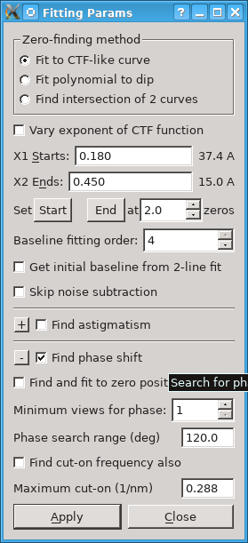
Just as for astigmatism, more views can be used to find phase than to find defocus; the number of views used to find phase is the maximum of the number for finding defocus and the number set in the Min views for phase spin control. When more views are used to find phase, a spectrum is computed first from that number of views, phase is found, the spectrum is computed for the smaller number of views needed for defocus, assuming that phase value, and then defocus is found from that spectrum, with phase fixed at the found value. When the same number of views are used for each, a single spectrum is computed for finding both parameters. However, when both astigmatism and phase shift are being found, there may be up to three rounds of spectra with different numbers of views.
If there are many zeros and the CTF does not closely match what the CTF equations predict with phase shift, the fit curve may get off at high frequencies because the much stronger signal from the first few zeros dominates the fit. A more balanced solution that fits better at the high frequencies can be obtained by selecting the Find and fit to zero positions option. With this option, the program finds minimum points in the spectrum by correlating the spectrum around each point with a segment of the expected CTF function. It then searches for the defocus and phase that best fit this set of positions, minimizing an error weighted by the strength of the correlation at each zero. The fit will be better at the high-frequency zeroes but the CTF-like curve may deviate noticeably around the first zero. This method requires at least 3 zeros. If the search fails, or there are fewer than 3 zeros, the program falls back to finding the phase that optimizes the usual fit of the CTF-like curve to the spectrum.
After finding phase, the second line at the top of the plotter window will show "Phase:" and the value in degrees, or "FAIL" if the search failed. When fitting to zero positions, the label "Err:" on the top line will be shown as "ZF err:" and the value will be the mean deviation of the fitted zero positions in reciprocal pixels (specifically, the weighted sum of squared deviations in position is divided by the number of zeros, and the square root is taken).
Two problems particular to finding phase shift may arise. One is that the first zero may rise up above the later zeros at high tilt. If this occurs, first make sure that the fitting is starting with approximately correct values of defocus and phase shift. For defocus, either adjust Expected defocus if that is what is being used, or make sure that the last found defocus is approximately correct if the current defocus is being used. Double click to set a good defocus value, if necessary. Adjust the Expected phase shift to the last known good value and turn off Use current phase shift. Repeat the fitting. If the zero is still elevated, you can try toggling Get initial baseline from 2-line fit, unless you have no noise files. If none of this works to bring the first zero down, you can also try changing the fitting range to start past the hump after first zero. The position of a minimum on a falling part of the spectrum is shifted by the underlying slope, so it is better to leave the zero out of the fitting.
The second problem may become evident with many zeros. If the minima of the fitted curve are consistently off from the minima of the spectrum at one end or the other, even when fitting directly to zero positions, you may need to determine a cut-on frequency as well. With a cut-on frequency, the phase is modeled as rising exponentially from zero at zero frequency to its true value at high frequency. This is difficult to solve for since it produces relatively small deviations in the spacing between zeros from a model with no cut-on frequency. The error when fitting either the spectrum or zero positions is rather insensitive to the cut-on frequency, so the search needs to find the minimum in a long, narrow trough with a shallowly sloping floor. The program scans the full range of cut-on frequencies from 0 to the value in the Maximum cut-on (1/nm) text box at a regular interval, for each value performing a full search for the best phase and defocus. Then it refines the search around the minimum, again doing the full search at each cut-on frequency being tested.
This search is activated by selecting "Find cut-on frequency also". Before doing so, you can assess whether a cut-on frequency helps the fit by entering some values in the Cut-on frequency (1/nm) text box in the Angle Range and Tile Selection dialog. Try values like 0.05, 0.1, etc up to the maximum cut-on shown in the text box. If this does not improve the correspondence between actual and fitted minima to some degree, there is no point in trying to search for a value. Also, do not try this search if there are fewer than 4 zeros to fit.
When fitting to a spectrum, this exhaustive 2-D search is now the most time-consuming operation in Ctfplotter. Searches with zero positions are much quicker, but require at least 5 zeros. As for phase alone, if fitting to zero positions is selected and there are too few zeros or the search with zeros fails, the program falls back to fitting the spectrum. Which way it fit is still indicated by whether the error is labeled "Err:" (in log power units) or "ZF err:" (in fequency units). If both kinds of fitting fail to find a minimum, the program will then fall back to finding phase only, and assuming a fallback value for cut-on frequency. This will be either the last cut-on frequency found, if Use current phase estimate is checked, or the value in the Cut-on frequency text box if it is non-zero, or the value stored for nearby angles in the defocus table, if any, or simply 0. The value used will be shown afer "Cuton:" in the plotter window with an "FB" after it to indicate that it is a fallback. However, if the search for phase only fails as well, both "Phase:" and "Cuton:" will be followed by "FAIL".
Whenever the cut-on frequency is non-zero, the phase values displayed here and saved in the defocus file will be the phase at one particular frequency, 0.3/nm, rather than the phase actually used in the CTF equation, the phase value at infinite frequency. This convention was introduced in order to prevent the phase values from varying widely from view to view, which they will otherwise do because the cut-on frequency is not found very accurately and the phase at infinity would covary with it.
The first example shows the appearance of the plotting window with a tilt series from the ventral disk of Giardia, taken with a Gatan K2 camera in an electron-counting mode at a nominal defocus of 6 microns. This is the initial spectrum of -21 to 21 degrees.
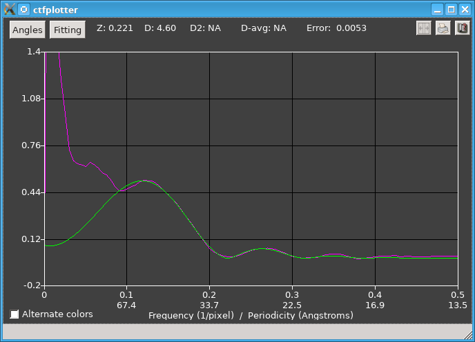
The range of the display in Y is dominated by the power at low frequencies, so it is necessary to zoom the display. This graph was zoomed by pressing the left mouse button with the cursor under the hump in the magenta curve (at ~0.12 in X, and ~0.35 in Y, two thirds of the way between the grid lines at 0.12 and 0.44), then dragging the mouse to just below the curves and out to near the right edge to set the lower right corner of the rubber band. Then the window looks like this:
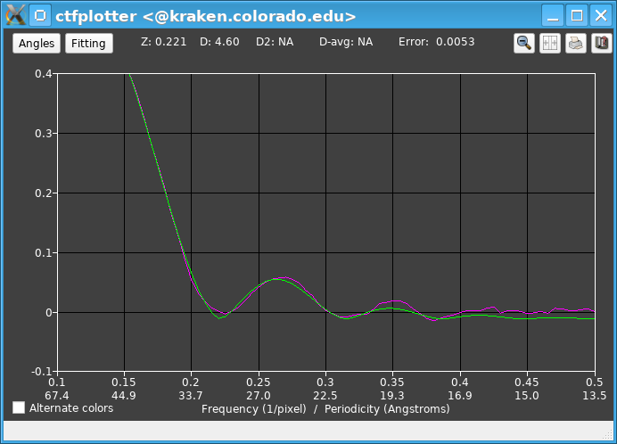
The top line shows that the fitted defocus is fairly far from the expected value of 6.0. As a result, the start of the fitting range, initially set to 0.14, is at a lower frequency than appropriate. Also, the third zero is fairly well defined in this plot, so the end of the fitting range, initially 0.275, is much too low. After changing to Current defocus estimate in the Angle Range dialog, setting the end of the range to 0.4 in the Fitting Parameters dialog, and pressing the Start button, which changes the start to 0.17, the graph looks like this:
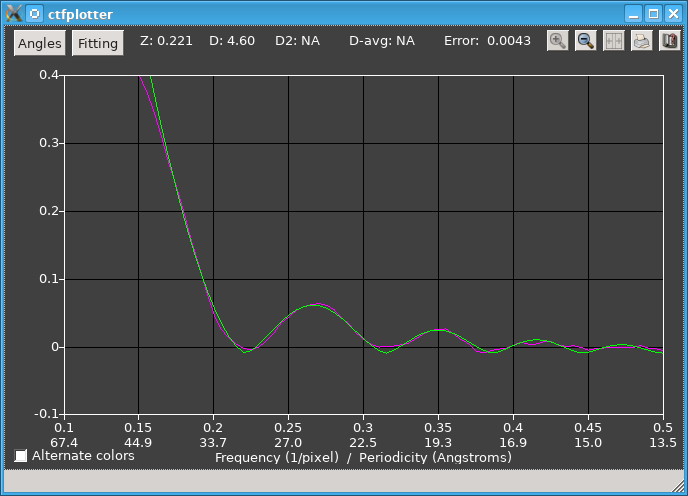
The next step is to see how many views need to be fit at once. This is done by clicking the Number of views to fit spinner repeatedly. When it gets to 1, the spectrum is still fairly clear and fits well:
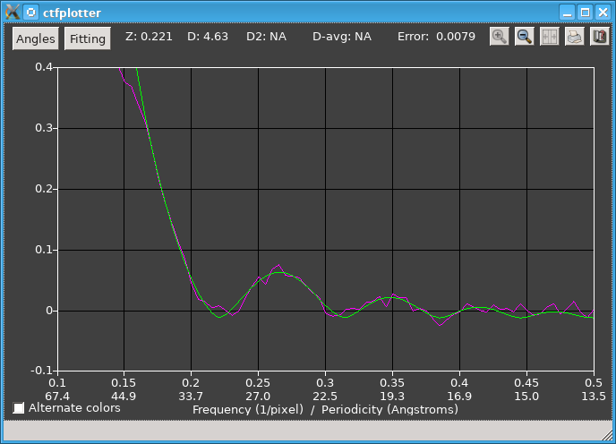
Still fitting to a single view, one can then step through and sample some higher tilt angles easily with the Step Up and Step Down buttons. The step size was initially set to 11 views, and this is adequate for sampling. At 61 degrees the fitting is still good:
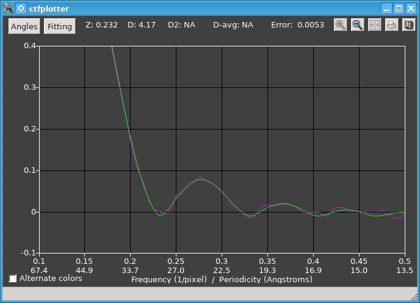
Autofitting could now be done, but it is worth assessing the ability to find astigmatism first. After returning to the initial tilt angle (-1.1 degrees), setting Min views for astigmatism to 3 to preserve SNR in the wedge fits, and turning on Find astigmatism, the final graph looks like this:
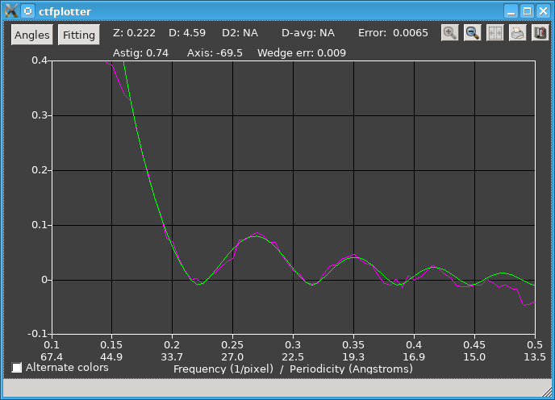
The astigmatism turns out to be quite large, 0.74 microns, and accounting for it gives a spectrum where the CTF signal goes all the way out to 0.5. The end of the fitting range can even be set to 0.45. Now autofitting to every view is quite appropriate. This is accomplished by turning on the Fit each view separately check box and then pressing the button now labeled Autofit All Single Views. The table is filled in as the autofitting proceeds, first from low tilt to negative angles then from low tilt to positive angles. Pressing Graph Values opens separate graphs for defocus, astigmatism amount, and astigmatism axis.
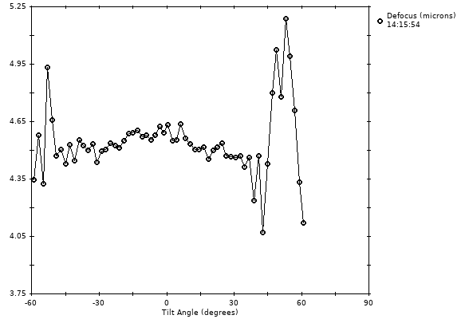
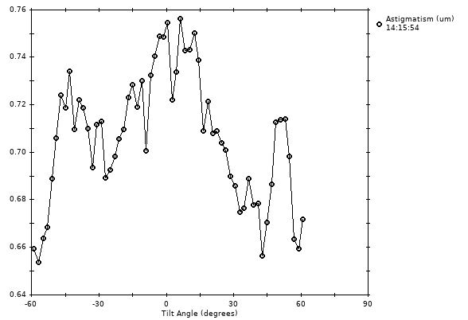
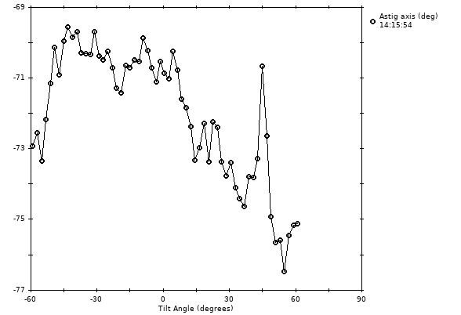
Astigmatism is being found fairly accurately, as indicated most strongly by the consistency in the axis angle. There are clearly some trends in both the amount and the angle of astigmatism, but the view-to-view changes are probably mostly measurement error. This variability is ~25% larger with Min views for astigmatism set to 3 instead of 5 and ~2 times larger with it set to 1 instead of 3.
The second example is from microtubules decorated with Eg5, taken with a DE-12 direct detector camera at a nominal defocus of 6 microns. This shows the spectrum and CTF-like fit for an angular range of -21 to 19 degrees, after switching to using the current defocus estimate.
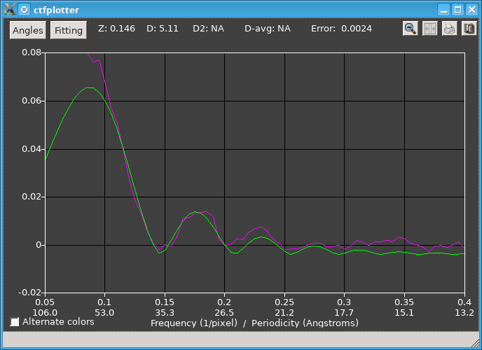
The fitting range here was 0.105 to 0.19, and it needs to be changed because the defocus is different from the nominal value, and also because there is good signal between the second and third zeros. Changing the fitting range to 0.11 to 0.25 and varying the exponent of the CTF curve gives the following:
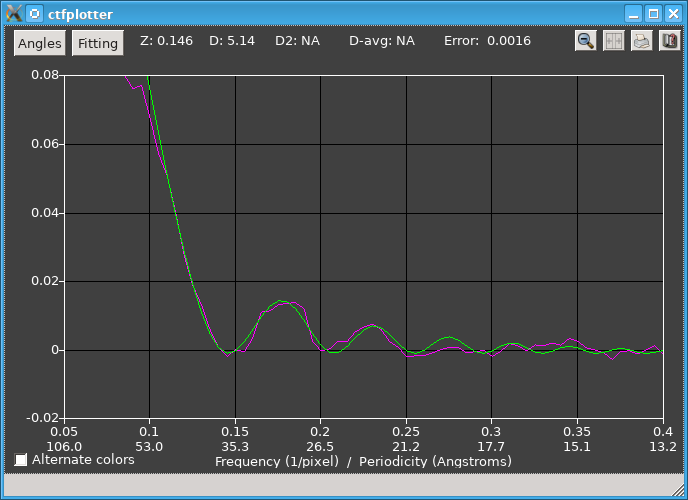
The curve fits the second peak better now because the fit includes two exponential decays, one dominated by the falloff of the power spectrum before the first zero and the other to accommodate the very different decay from the first to the second peak. With this data set, it was possible to fit ranges of 10 degrees, although ranges of 20 degrees gave cleaner results at one end of the tilt range, but the data were too noisy to allow reliable fitting to every individual image.
In this part of the tilt range, the wedge spectra needed to find astigmatism can be fit well enough over the same set of 21 views. Turning on Find astigmatism gives this:
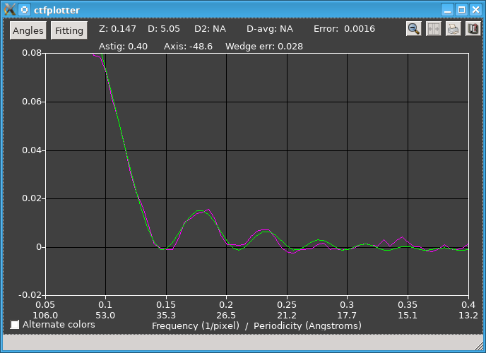
The astigmatism was sizeable here, and with it accounted for, there is now a fairly clear signal out to the fourth zero. At the higher positive tilts, the wedge spectra become quite shallow at some wedge angles, so it is necessary to increase the Min views for astigmatism to 40 there.
The third example shows results with a tilt series from bovine papilloma virus, taken at a nominal defocus of 3 microns and a pixel size of 0.76 nm. These data were taken on a CCD camera and there is little useful signal past the first zero. When the program is started with the default angular range in the command file, the window looks like this:
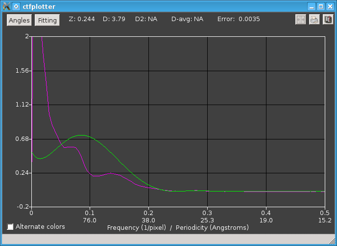
This graph was zoomed by pressing the left mouse button with the cursor just above the second low hump in the magenta curve (at ~0.13 in X), then dragging the mouse to just below the curves and just to the left of 0.4 to set the lower right corner of the rubber band. Then the window looks like this:
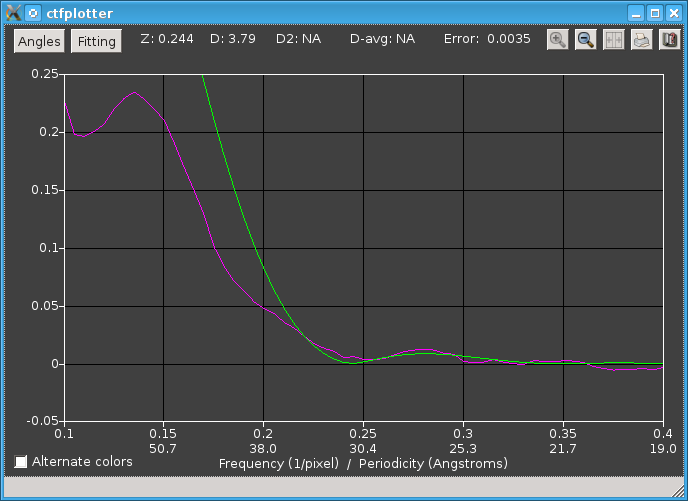
Now we can see more clearly that the background subtraction is giving a reasonable power spectrum that is close to flat at high frequencies and that has a discernable dip, but the green curve does not fit very well. In the Fitting Parameters dialog, we see that it is fitting from 0.215 to 0.39, a range that was determined from the nominal defocus but is not quite appropriate for the actual defocus. The range was changed by moving the left side to 0.185 to include more of the falling phase of the power spectrum, and reducing the right side to 0.29 because the power spectrum drops off after that point, well before its second zero. At this point it is also clear that the actual defocus is different from 3 microns, so we select the Current defocus estimate radio button in the Angle Range dialog so that the shifting from non-centered tiles will be more accurate. If the fitting were unstable, a better way to do this would be to change the Expected defocus entry. After recomputing the curves and zooming the display again, it looks like this:
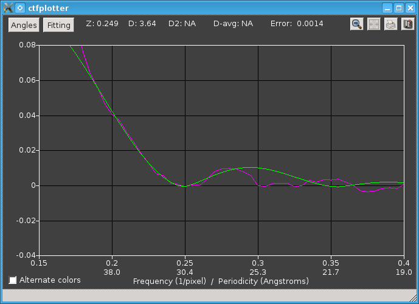
Here we see that the CTF-like fitting works fairly well near the bottom of the dip, and that it leads to a defocus estimate significantly different from the nominal defocus. Turning on the Vary exponent of CTF function gives a slightly different fit:
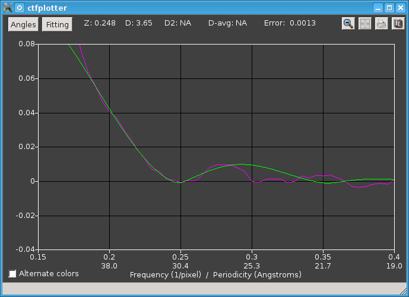
This extra parameter does not improve the fit of the curve to the dip, so it is better to leave it off. When using large steps in the view range, it is best simply to step through the whole tilt range to assess whether the fitting works at all tilts. The dip at the first zero remains well-enough defined when stepping to the negative end of the range, but at the positive end of the range the dip is barely perceptible:
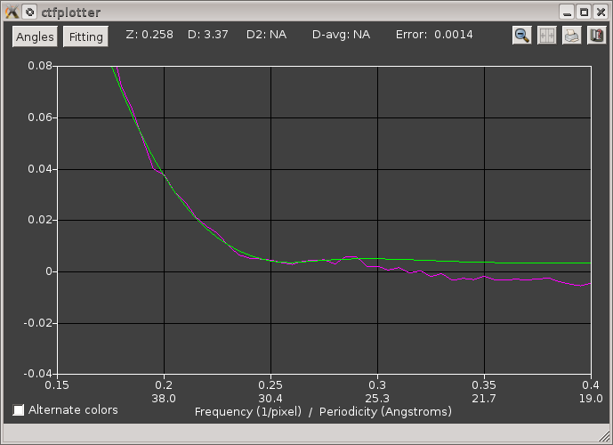
The dip can be improved by skipping the first 3 views, which makes the tilt range on plus side close to that on the minus side. When "1-3" is entered into the text box for Views to skip, the program adjusts the view range to go from 16 to 58 degrees, which gives this curve:
Autofit All Steps can now be used over the full extent of the tilt series, after which the angle dialog looks like this:
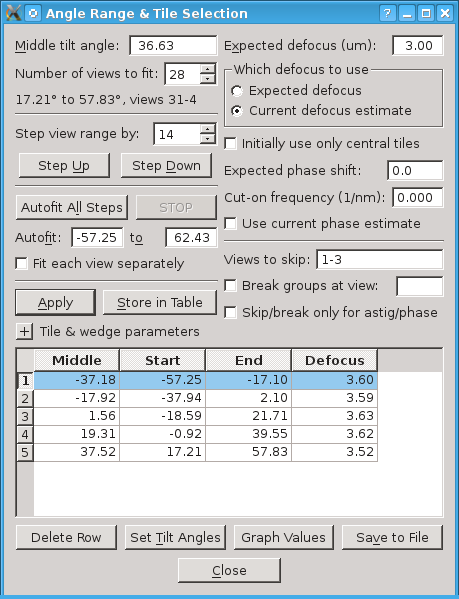
Although there is no need to try the different fitting methods with this data set, they are illustrated next.
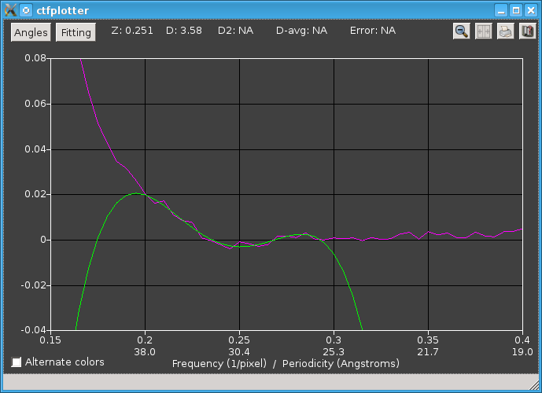
This panel shows the power spectrum for the initial angular range with a fourth-order polynomial fit to the frequency range shown in the snapshot above where the dialog was set to fit a polynomial. As is typical of polynomials, the green curve goes off wildly outside the fitting range.
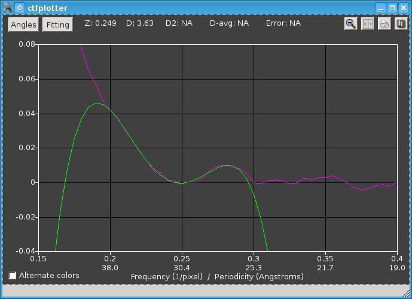
This panel shows the power spectrum with determination of the zero from the intersection of two curves, with the frequency range as shown above when the dialog was set to find an intersection.